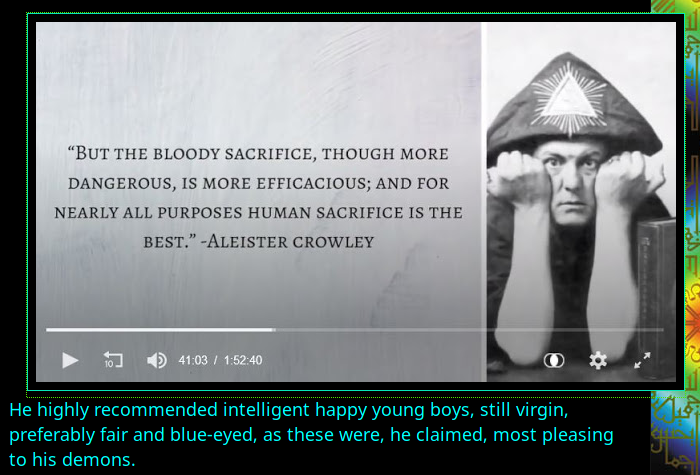

This morning I woke up thinking that Devil and Satan could be the
same word:
-il and -an are obvious suffices
Devil is Teufel in German. T is way closer to S, because ת can be
read both ways. and also because the truer form of אמש is אמת
(read about it somewhere in the main part)
f & t could be the same letter not only because they're
similar in ogham, the same way t reminds f, but both readings also
meet in θѳ but then this is th. Which makes this common steam
nothing else than Death.
And it is told, that Devil eats your soul away. But then who is
the person who tells "So, because you are lukewarm—neither hot nor
cold—I am about to spit you out of my mouth."?
Amen could be another form of אמת for they say that amen meant
truth, so these words are at least related.
So back to Bathomet, and his wickedness:

That image leads to where he spoke the first part, and I'm yet to
find where he recommends killing aryans. but his hat tells both
who are his demons and why AC is much more prominent than AB.
True witches are females. Male witches are degenerates.
And I never said those female witches are not wicked. But people
kill for all known reasons, these criminals don't deserve any
special treatments, especially not because of their
dnst-3-induced-folie-a-deux. After all, other criminals are also
wicked, weakened, weak.
But there's a difference in those crimes, which could be the
reason for magical crimes to be punished more severely: ritual
murder is performed with the suffering of the victim. But this I
don't necessarily know, that is what tells pizzagate conspiracy
theory, that adrenochrome is in larger ammount when the victim
suffers. Today, when adrenochrome can be synthesized, these
horrible murders should be more rare (but unfortunately can only
refer to adrenochrome addicts, ritual murders made for
psychological change in the magician (as a materialist, I can only
believe that psychological state of a murderer is the result of
the ritual, such breaking of the taboo can make the degenerate
feel special, and when one believes something, one can express it
into the world (it is some bold claim, I must deliver some
scientific or any source about it)
I am not competent to write on this subject. I read neither AB nor
AC, I always considered mystics mistaken or charlatan, and now I
only see hey also bear some knowledge
(bear
and tear could be the opposite forms, just as бур и тур but
these two are in different meaning if in stock-market, not sure
they're in older meanings: медведь может что-нибудь утащить, бык
может разрыть? рогами, копытами, плугом. не знаю это такое сырое
и непонятное. серый шрифт)
but not every knowledge is healthy, or is it all healthy until you
start implementing what it tells you? nah, even evil information
can traumatize. It's another complex question I don't feel
competent about.
The End of the secret level.